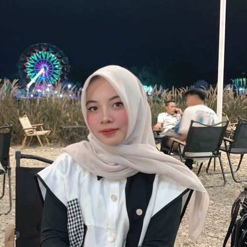

Instagram
Naicyla__
Nailah Ramadhani
Fakultas
Teknik
Jurusan
Teknik Informatika
Prodi
Rekayasa Keamanan Siber
Asal
Aceh Tamiang
About Me
Tentang Saya
Saya tertarik mempelajari dunia keamanan siber dan pengembangan web sejak awal kuliah, dan sedang membiasakan diri membangun halaman web dari dasar menggunakan HTML dan CSS sebelum lanjut ke topik yang lebih kompleks.
Riwayat Pendidikan
- 2025 — Sekarang Mahasiswa Rekayasa Keamanan Siber
- Perguruan Tinggi Politeknik Negeri Batam
Yang Sedang Dipelajari
HTML
CSS
JavaScript Dasar
Git & GitHub
Microsoft Office